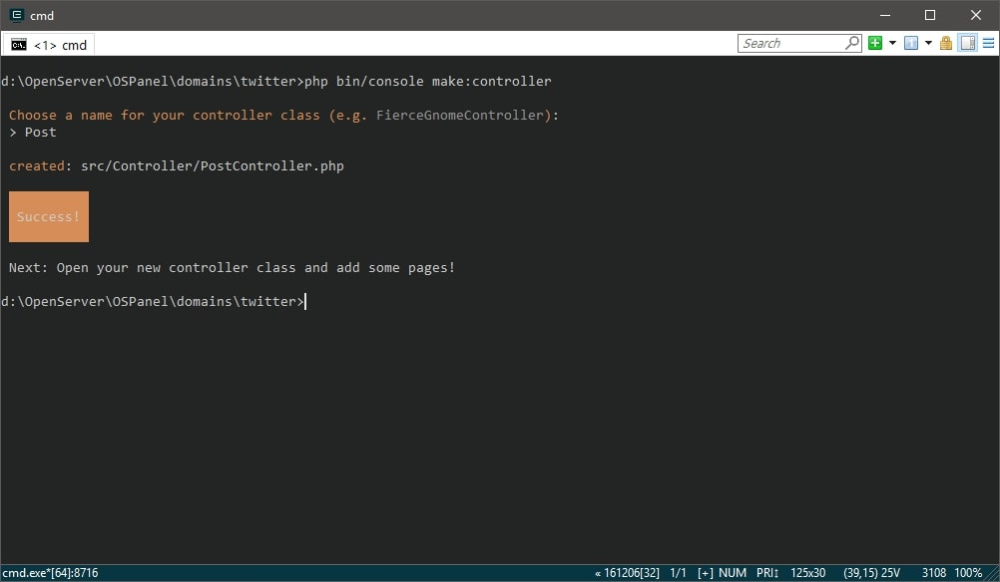

Symfony Controllers
Создание контроллера
Предлагаю автоматизировать рутинную работу с помощью подключения рецепта генератора,
хотя ничего не будет мешать создавать сущности, контроллеры и прочее руками.
В консоли пишем composer require generator.
После установки к генератору можно обращаться
php bin/console make:генерируемая_сущность.
Функционал можно посмотреть командой php bin/console list make.
Теперь, когда все необходимые компоненты подключены, создадим контроллер PostController.
Пишем php bin/console make:controller и вводим
имя котроллера - Post. В папке src с ним же сгенерировались директории
Controller, Entity, Migration, Repository.

{kind=link}
Routing
Проваливаемся в контроллер PostController и видим в блоке аннотаций
@Route,
прямо над методом index. Это один из вариантов роутинга в Symfony,
конкретно в данном случае работающий через аннотации.
@Route("/post", name="post")
/post – это маршрут. То, что будет написано в адресной строке
name – это имя, по которому можно обращаться к текущему методу.
Например, для генерации ссылок.
Однако, для того чтобы вся эта магия работала нам нужно подключить annotations.
Снова идем в консоль и печатаем composer require annotations.
Маршруты могут быть настроены в файлах YAML, XML, PHP или аннотациях. Функционал у всех един.
Чтобы убедиться в работоспособности контроллера, просто перейдем по маршруту
/post, конечно же запустив предварительно сервер.
Ответ будет в формате json, то есть именно то, что возвращается в методе index.
return $this->json([
'message' => 'Welcome to your new controller!',
'path' => 'src/Controller/PostController.php',
]);
Очень удобной может быть команда php bin/console debug:route,
которая покажет список всех маршрутов вашего приложения. Особенно пригодится, когда проект станет
достаточно большим.
Для того, чтобы изменить маршрут по умолчанию, необходимо внести правки в файл
config => routes.yaml, указав путь и контроллер, который
нужен вам. Предлагаю дефолтным сделать маршрут /post.
index:
path: /
controller: App\Controller\PostController::index